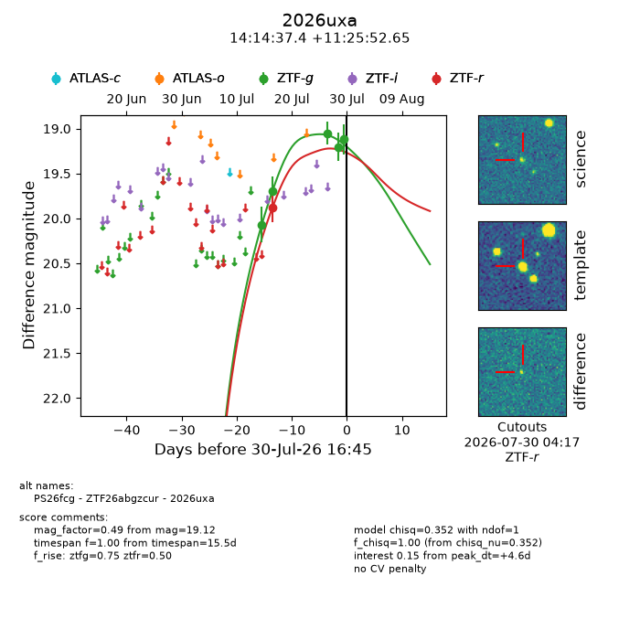
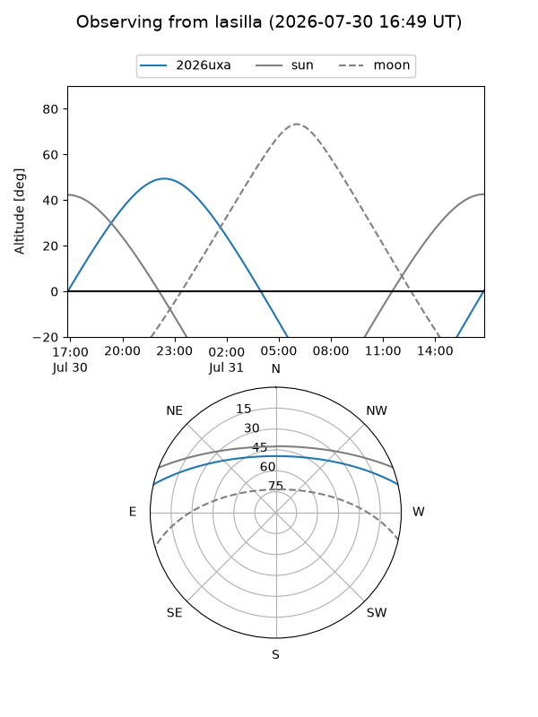
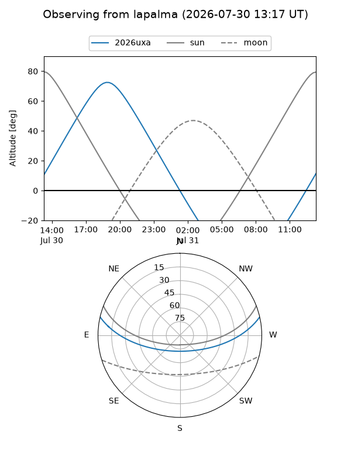
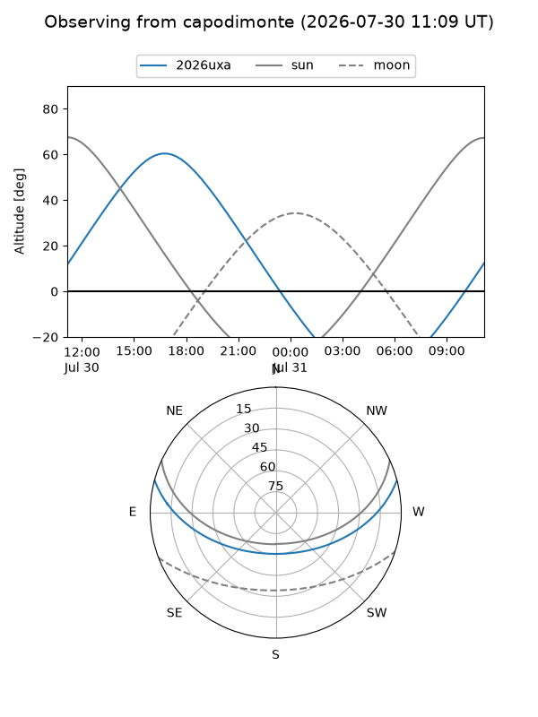
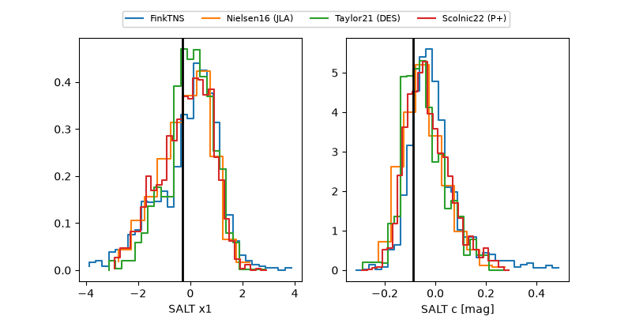

2026uxa
Target 2026uxa at 2026-07-31 04:42
Aliases and brokers:
FINK-ZTF: ztf.fink-portal.org/ZTF26abgzcur
Lasair-ZTF: lasair-ztf.lsst.ac.uk/objects/ZTF26abgzcur
ALeRCE-ZTF: alerce.online/object/ZTF26abgzcur
YSE-PZ: ziggy.ucolick.org/yse/transient_detail/2026uxa
TNS name: wis-tns.org/object/2026uxa
Direct TNS query: direct search
alt names
ZTF26abgzcur (ztf,fink_ztf)
2026uxa (tns,yse)
PS26fcg (panstarrs)
Coordinates:
equatorial (ra, dec) = 213.6558,+11.43129
equatorial (HMS+DMS) = 14:14:37.39,+11:25:52.65
galactic (l, b) = (358.1806,+64.94101)
Flags:
TNS type: nan
peak dt: +5.1
Photometry:
last ztfg=19.12, ztfr=19.88
5 ztfg, 1 ztfr detections
Lightcurve

Visibility



Additional plots
